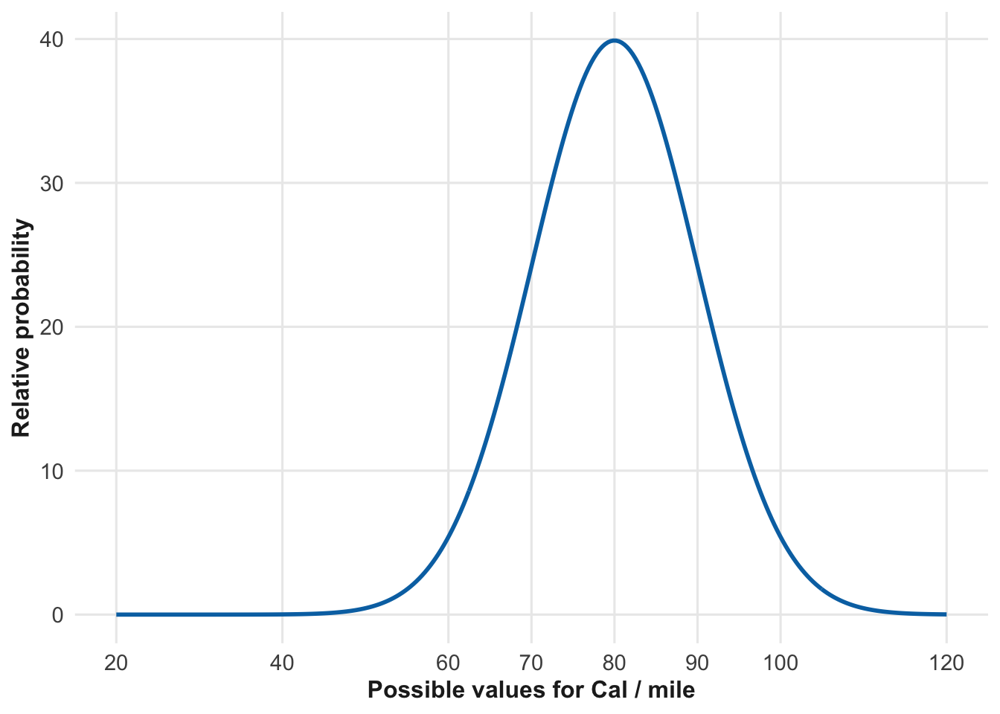
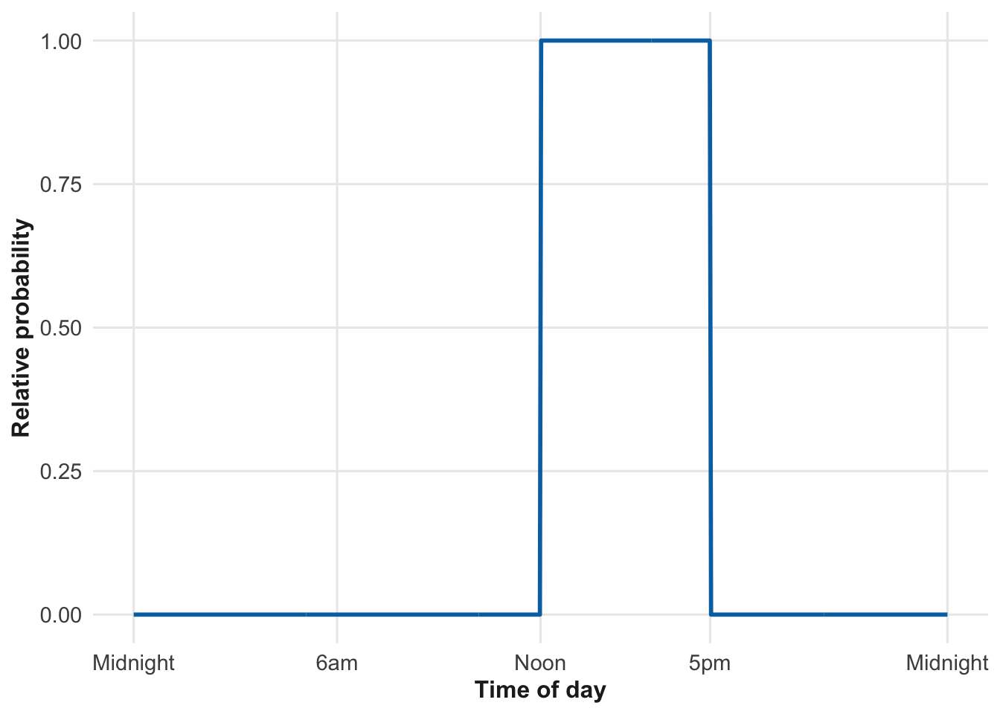
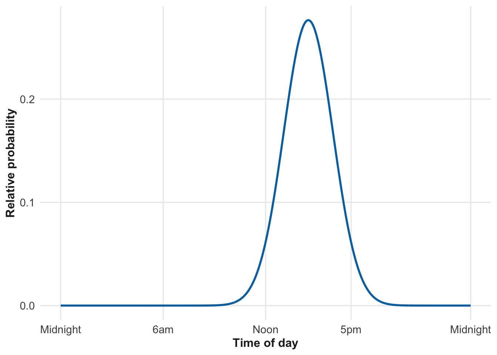
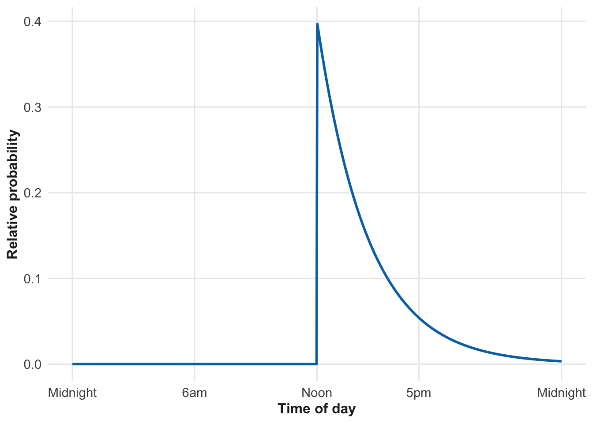
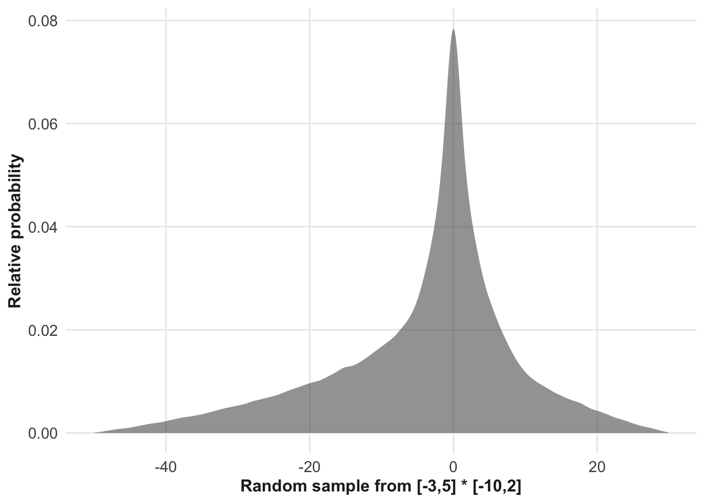

8 Uncertainty in quantities
Vocabulary Review
- analysis (3)
- data (2)
- functions (6)
- models (1)
- number line (3)
- per (3)
- point (3)
- quantity (3)
- rate (4)
- sample (2)
- value (2)
New
- bayesian
- exponential distribution
- frequentism
- hypothesis
- mean
- normal distribution
- probability distributions
- random number generation
- range
- relative probability
- simulation
- standard deviation
- uncertainty
- uniform distribution
- variance
We have looked at functions so far as our model representation of the relationship between one quantity (the function output) and one or more other quantities (the function inputs). This role for functions will remain central to how we use models for quantitative reasoning. Still, there are other important uses for functions.
This chapter considers a distinctly different use for functions: quantifying the ☞ uncertainty ☜ in the value of a single quantity.
Imagine a family in the process of constructing a budget for next year. Naturally, the family has a good idea about their expected income next year. Likewise, they can estimate next year’s expenses for rent, utilities, food, transportation, and so on. This information guides them in planning for discretionary spending, such as vacations, clothing, and so on.
Suppose the family’s current rent is 1500 dollars per month. The lease is up for renewal in 6 months; they are almost sure the rent will increase—their best guess: a 4% increase to $1560 per month.
Most people making budgets use a best guess for quantities whose exact value is uncertain. Doing this, the family figures next year’s total rent expenditures as six monthly payments of $1,500 per month, followed by another six months at $ 1,560 per month. Total: $18,360 per year.
In situations where the stakes are higher, it can be worthwhile to keep track not just of the best guess but of the uncertainty in that guess. It is common to express uncertainty using ☞ ranges ☜ An equivalent format is “approximately 80 \(\pm\) 20 Cals per mile.” For instance, in Chapter 4, an AI quoted a range for the number of Cals burned per mile while walking: “approximately 60 to 100 Cals.”
The shorthand notation for the range just mentioned is [60, 100]. In statistics, such a range is not intended as an absolute statement that the value can never be less than 60 or greater than 100. Rather, it is a statement that the value is likely to be in the range, and unlikely to be outside of it.
In the statistics interpretation of ranges like [60, 100], “likely” is interpreted as a 95% chance.
However, when doing calculations—such as adding up the uncertainties for each of the several budget categories—the range format does not suffice. To support quantitative reasoning, we need another format for expressing uncertainty.
8.1 Relative probability
The fundamental problem with the range format is this: It is not necessarily the case that uncertainty propagated through a function is correctly represented by applying the function to both the top and bottom of the range.
To illustrate, consider the number of Cals burned by a person in a walk of about 3 to 4 miles. In addition to this walk length information, we know that the energy consumption per unit distance is 60 to 100 Cal/mile. As described in Chapter 3, we combine quantities with different dimensions by either multiplication or division. The correct choice here is multiplication, since [Cal] = [miles] [Cal/mile]. This multiplication would directly provide the answer if there was no uncertainty attached to the distance or energy consumption per unit distance. But here, we are not just multiplying quantities but uncertain quantities described by ranges. Using the range notation the multiplication can be written like this: \[[3 \ \text{ to }\ 4]\, \text{miles} \times [60\ \text{ to }\ 100]\, \text{Cals/mile} =\ \LARGE{\textbf{?}}\ . \tag{8.1}\]
The question mark in Math expression eq-range-walking-kinetics is justified because there is no standard way to multiply uncertainty ranges. Anyone can invent a reasonable-sounding strategy for the calculation, for instance, multiply the lower ends of each range, and similarly for the upper end of the result: \[[3 \times 60\ \text{ to }\ 4 \times 100]\,\text{Cals} = [180 \ \text{ to }\ 400]\, \text{Cals}\ .\] As reasonable as this looks, there is a problem with the strategy: how can we tell whether it gives the right answer to the underlying question?
Indeed, there are situations where the above strategy is clearly wrong. For instance, consider multiplying the two ranges [-3 to 5] by [-10 to 2]. Slavishly following the above procedure yields a range of [30 to 10]. Is this right? For both ranges, note that zero is well within the limits. Multiplying any number by zero gives zero, so zero ought to be inside the range produced by the multiplication. However, zero is not in [30 to 10].
Figuring out how to reliably handle calculations involving uncertainty involved the work of many mathematicians and scientists over the 18th and 19th centuries. A good answer to the walking energetics question in Math expression eq-range-walking-kinetics is [200 to 360] Cals. Similarly, a good answer to [-3,5]\(\times\)[-10,2] is [-25 to 17], which correctly includes zero inside the range.
The advent of the computer has made such uncertainty calculations much more accessible. At the heart of the matter is the concept of ☞ probability distributions ☜. When we use a range (such as 3 to 4 miles or 60 to 100 Cals/mile) to represent uncertainty, we mention only two values for the quantity: the lower and upper bounds on the range. In contrast, probability distributions consider every possible value: the whole number line, not just the two points defining the range.
A probability distribution can be created by assigning a positive number to each point on the number line. This number is called a ☞ relative probability ☜. Relative probability numbers cannot be negative.
There are an infinite number of points on the number line, so to use probability distributions, we need to keep track of an infinite number of relative probabilities: one for each point on the number line. Fortunately, Chapter 6 has already provided a mechanism for handling the situation: functions.
To illustrate, consider the uncertainty we previously represented as the range 60 to 100 Cals/mile. Figure fig-cal-per-mile-distribution shows the corresponding probability distribution as a function.
The input to the function is drawn from the set of possible values for the uncertain quantity. The output from the function is the relative probability for that particular value of the quantity. In Figure fig-cal-per-mile-distribution, the relative probability for 40 Cal/mile is very low —practically zero. On the other hand, the highest relative probability corresponds to 80 Cal/mile. The numerical value of the function output at 80 Cal/mile is 40. That particular value, 40, tells us very little on its own; it needs to be put in context. The context for a relative probability is the function output for other inputs, that is, for other possibilities of the Cal/mile value. For instance, the relative probability for 60 Cal/mile is about 5, while the relative probability for 80 Cal/mile is about 40—that is, eight times as likely as 60 Cal/mile.
When the output of a relative probability function is close to zero, the occurrence of the corresponding input value is vanishingly rare. We took advantage of this in Figure fig-cal-per-mile-distribution to avoid showing the entire number line on the input axis; we centered the display on the most likely values.
hill() is often a good choice for modeling a probability distribution. Often, but not always. The following section explores hill() along with a handful of other probability distribution functions. Note that in general the core modeling functions are not used for probability distributions. hill() is the one exception. We will have more to say about this in Section 8.4.
8.2 Where do probability distributions come from?
Probability was invented in the 17th century by mathematicians interested in gambling. Progress was made by a mixture of experience reinforced by mathematical theorizing and algebraic derivation.
A significant development was the realization, in the late 18th and early 19th centuries, that the hill() function was particularly useful in the analysis of data. hill()-like distributions were observed frequently in data from diverse contexts, so much so that it came to be called the “☞ normal distribution ☜.” Mathematical theorizing, long after the normal distribution came into use, showed that in a scenario in which many independent random numbers, from whatever source, are added together, the normal distribution, or something very much like it, results. This scenario appears frequently in statistical calculations. However, over-reliance on this scenario outside statistical methodology can lead people to wrongly discount the possibility of rare events such as droughts, floods, and financial crises.
Probability distributions like the normal distribution are often used to model uncertainty. In Chapters 11 and 12, we will add a somewhat different perspective: a probability distribution is a ☞ hypothesis ☜ which we use to make sense of our experiences and observations in the world.
Starting about 1900, statisticians looked at the question of how correctly to infer properties of the real world from the results of statistical calculations. That is, they wanted to figure out what kinds of conclusions about the world are justified by analysis of data. This matter is called ☞ statistical inference ☜. One important school of thought emphasized making mathematically provable statements about inference. To do this, they had to develop a theoretical framework which came to be called ☞ frequentism ☜. Frequentist methods play a central role among statistical theorists and remain the foundation of much statistical education. Readers who have studied statistics have likely used formulas and nomenclature—e.g., p-value, hypothesis tests—that stem from the Frequentist point of view. Another framework for inference, ☞ Bayesian ☜ inference, predates Frequentism. In the Bayesian point of view, the emphasis is not on defining things in a way suitable to support mathematical proof, but rather in a way to answer questions in a form needed for quantitative reasoning, uncertainty assessment, and decision making. Over the last half-century, the Bayesian point of view has gained many adherents among statistical theorists, partly because Bayesian calculations that were once difficult became practical by using computers. In this book, we adopt the Bayesian perspective.
8.3 Exemplary probability distributions
There is an infinity of probability distributions simply because there is an infinity of functions. Nevertheless, almost always modelers draw from a small library of about twenty named distributions. More precisely, these are ☞ named families of distributions ☜. Each of these families includes one or two parameters that, often, are equivalent to applying an input transformation and/or output transformation. In this section, we focus on three distributions that modelers use in everyday work: the normal, the uniform, and the exponential.
- Uniform distribution
- The ☞ uniform distribution ☜ models a situation where the possibilities must be within a known range, but could be anywhere in that range. Figure fig-afternoon-uniform shows what a uniform distribution would be for a situation like this: “She texted that she will arrive in the afternoon, but I don’t know exactly when.”

The parameters for the uniform distribution family are the minimum and maximum extremes of the range of possibilities.
- Normal distribution
- We introduced the normal distribution in sec-relative-probability as the standard distribution family that corresponds to the type of uncertainty often expressed using a range or the \(\pm\) notation.
It surprises many people that these notations do not correspond to the uniform distribution. Recall that the uniform distribution labels as impossible any outcome outside of the range from minimum to maximum. However, in many circumstances, an outcome outside the range is merely unlikely, not impossible. For instance, is it impossible that our friend will arrive in the evening or before noon?
The normal distribution, on the other hand, softens the edges and replaces “impossible” with “not likely.” The further from the interval, the less likely. The closer to the center of the interval, the more likely. The normal distribution in Figure fig-afternoon-normal includes the possibility that she arrived yesterday or will arrive next week. Very, very unlikely, but possible.

The parameters for the normal distribution set the center and spread, but are usually called the “☞ mean ☜” and “☞ standard deviation ☜.” (Some authors prefer to use “☞ variance ☜” instead of “standard deviation”: the variance is the square of the standard deviation.) The mean can be any value; the standard deviation must be positive.
- Exponential distribution
- The ☞ Exponential distribution ☜ corresponds to a different message from a friend. “It’s noon now. I’m going to try to get there right away. I think it will take about an hour, but I do not know anything beyond that. It might be much longer.” The exponential distribution expresses much greater uncertainty at the high end. A much more typical application would be the uncertain time between 100-year storms.

A concrete way to think about the exponential distribution is as a description of the intervals between randomly occurring events. In Figure fig-afternoon-exp, the first event was assumed to be at noon; the second event will be the time that the friend arrives. The exponential model is based on the idea that there is a fixed probability that the second event will happen in a short interval after the first. But if it doesn’t occur in that short interval, the same probability applies to the event happening in the next short interval, and so on. Perhaps contrary to intuition, this means that the probability of the second interval happening at time t after the first event decays exponentially with t, as in Figure 8.4.
The exponential model assumes that the second event is equally likely to occur at any time. There is one parameter for the distribution typically called “lambda” (which is \(\lambda\) in the Greek alphabet). The mean time between events is \(1/\lambda\). (In Figure fig-afternoon-exp, the mean corresponds to that for the distributions shown in Figure fig-afternoon-normal and Figure fig-afternoon-uniform.)
8.4 Simulation
A relative probability distribution function takes a possible value as input and returns a number. That number is an indication of how likely that possible value is. Relative probability distributions are useful for describing uncertainty.
Often, however, we need to reason about the consequences of input uncertainty for the uncertainty in the output of the function. One technique for such reasoning with uncertainty is ☞ simulation ☜.
At the heart of simulation is the idea of using a relative probability distribution function to generate a likely input value. The input values that are associated with a high relative probability are more likely to be generated than those associated with a low relative probability.
We call the process of generating a likely input value ☞ randomly sampling from the distribution ☜ or, more generally, ☞ random number generation ☜.
For instance, in Figure fig-cal-per-mile-distribution, a random sample between, say, 75 and 85 would be quite likely, while sample values less than 40 would be vanishingly unlikely.
Random number generation is an important tool for many modeling applications and even plays a role in constructing the responses from AI systems. Such generators are provided for many computer languages and are often built into the language itself.
To illustrate, let’s generate a single random sample from the distribution in Figure fig-cal-per-mile-distribution.
rnorm(1, mean=80, sd=10)[1] 89.78027Generating a single number does not give much information, so modelers often generate many random numbers. We will illustrate with 20, but it’s common to generate thousands or even millions of random numbers
rnorm(20, mean=80, sd=10) |> # The hill() distribution.
round(digits = 1) [1] 74.8 75.1 85.0 97.6 71.6 88.4 86.6 81.9 88.1 89.3 81.4
[12] 71.7 68.5 62.0 80.2 74.4 88.4 72.1 70.3 95.5As a simple example of using simulation, consider the problem posed at the start of this chapter: [-3,5]\(\times\)[-10,2].
set.seed(102)
product <-
runif(20, min = -3, max = 5) *
runif(20, min = -10, max = 2)
round(product, digits = 1) [1] 1.7 -2.5 -11.3 -3.4 15.7 -2.1 -42.2 1.9 -21.0
[10] -1.6 -21.4 1.9 -32.8 0.0 2.7 -28.9 -25.2 0.0
[19] -7.5 -20.2Notice that the 20 samples of the product vary from one to the other. It is only as a group that they give us information about the uncertainty in the product. Computer graphics—with a much larger sample—makes it easy to visualize the uncertainty, as in @two-multiplied-uniforms. The distribution is not uniform, but rather has a peak in the middle and tails off to zero at the extremes.
